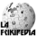
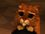

De: La Frikipedia, la enciclopedia extremadamente seria.
De: La Frikipedia, la enciclopedia extremadamente seria. De: La Frikipedia, la enciclopedia extremadamente seria.
|  Frikiproyectos | Frikcionario | Frikilibros | Guías | Piriódico |
|  Adopción | Destacados | Limpieza | Reciclaje | |
Para usar esta plantilla no copies el código, simplemente escribe {{Frikiproyectos}}.
Autor(es):